./about.sh
Cybersecurity & Infrastructure Professional with comprehensive expertise spanning network architecture, operating systems, and software development — from physical layer to application level. Strong foundation in PC hardware, OS internals, and networking fundamentals. Specializes in designing secure, scalable IT environments by embedding security into infrastructure and application design from the ground up, rather than treating it as an afterthought. Focused on delivering efficient, secure solutions that solve business problems without adding friction for end users.
./resume.sh
For a detailed, traditional overview of my qualifications and experience, please download my full resume.
Download Resume (PDF)./experience.sh
Network & Security Infrastructure Consultant
Sonet Integrated Solutions (Titan Company Project) • Jan 2026 – Jun 2026 | Chikkaballapur
- Enterprise Deployment: Engineered the complete Layer 1 to Layer 3 deployment of a 152-node enterprise IP CCTV network. Designed the physical fiber-optic backbone and server room architecture to eliminate physical security risks.
- Threat Neutralization (Internal DoS): Acted as the primary incident responder for a catastrophic campus-wide Layer 2 broadcast storm. Diagnosed the spanning tree failure and edge loop, isolated the compromised nodes, and restored 100% network availability with zero data loss.
- Topology Re-Architecture: Audited a vulnerable, legacy daisy-chain network topology and completely re-architected it into a highly resilient Hub-and-Spoke model. Enforced strict subnet isolation and VLAN tagging to prevent lateral propagation of edge-device failures and mitigate future STP vulnerabilities.

Founder
CtrlWeb • June 2024 - Present
"Driving Innovation and Growth"
- Spearheaded the founding and scaling of an end-to-end IT consultancy, delivering a portfolio of web, software and infrastructure solutions.
- Engineered a bespoke, multi-outlet Point-of-Sale (POS) system from the ground up using PHP/JS and Git.
- Implemented and administered self-hosted n8n automation servers on Linux for multiple clients.
Infrastructure Engineer
E&P International Ventures • Nov 2024 – Sep 2025
- Architected and deployed the comprehensive IT and network infrastructure for a new 13-outlet commercial campus in Shoolagiri and several distributed franchised outlets.
- Evaluated, selected, and integrated the complete technology stack across the campus, including specialized Point-of-Sale (POS) systems.
- Led the end-to-end development and deployment of the corporate website and managed ongoing IT initiatives.
System and Network Security Admin Intern
Basik Marketing Pvt. Ltd. • Jul 2024 – Oct 2024
- Managed core network infrastructure uptime and performance against threats, actively deploying backup link failover routing during critical power disruptions to eliminate dropped packets on live streams.
- Documented corporate IT systems and created comprehensive network diagrams to optimize the internal knowledge base.
./certificates.sh
./education.sh
Garden City University
2022 - 2026
"Graduated with a B.Tech in Computer Science (IT-Cyber Security)"
Successfully completed my degree with a specialization in Cyber Security, deepening my academic knowledge in the field and graduating with First Class Distinction (CGPA: 9.07 / 10.0).
Presidency School (Grades 1 - 12)
Foundation
Completed my schooling in the CBSE stream, choosing Science with Computer Science in 11th and 12th grade to build a strong technical foundation.